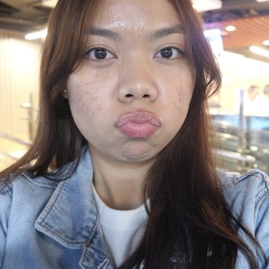
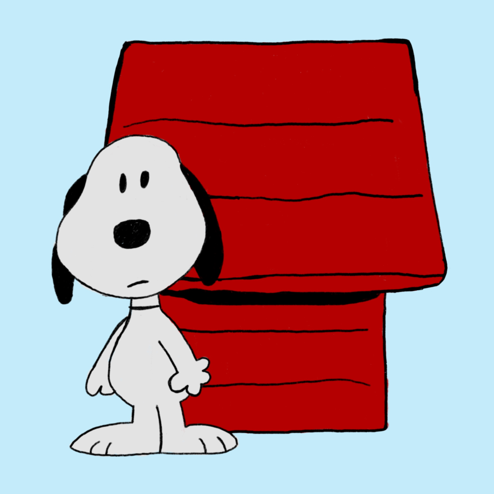
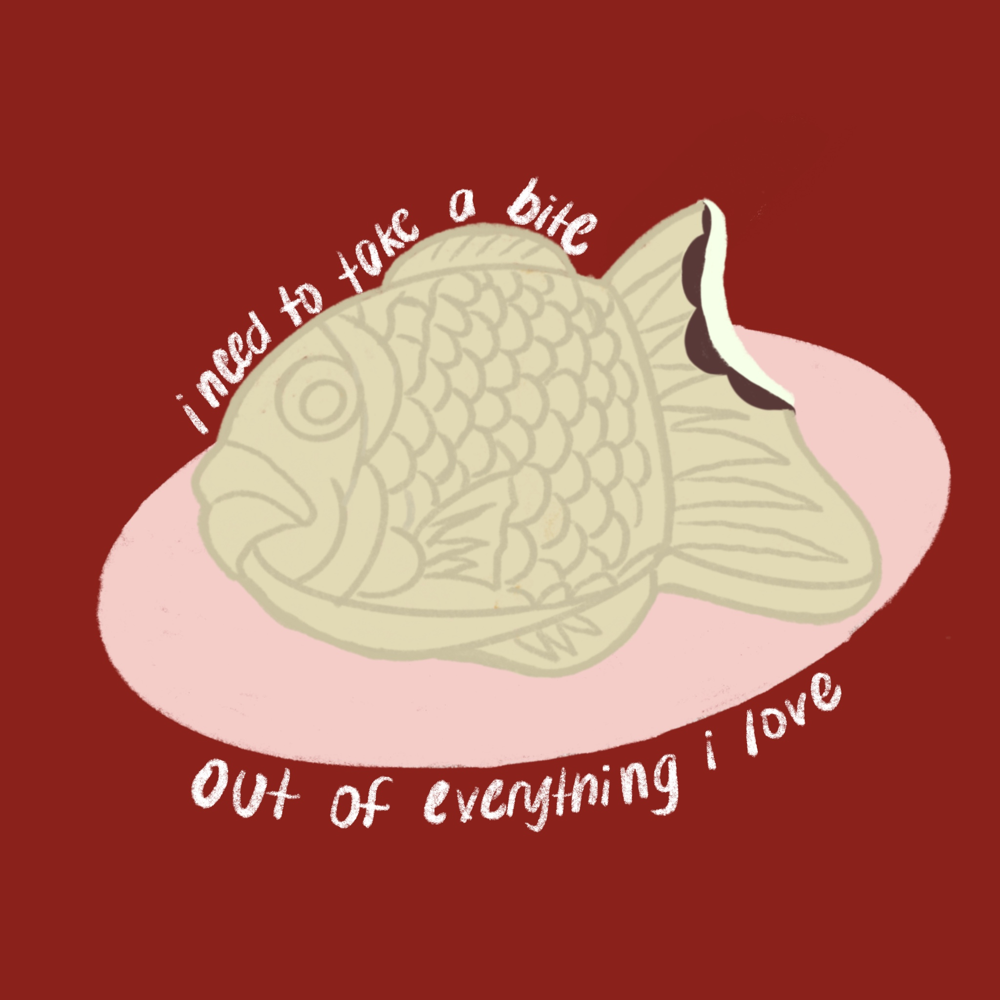
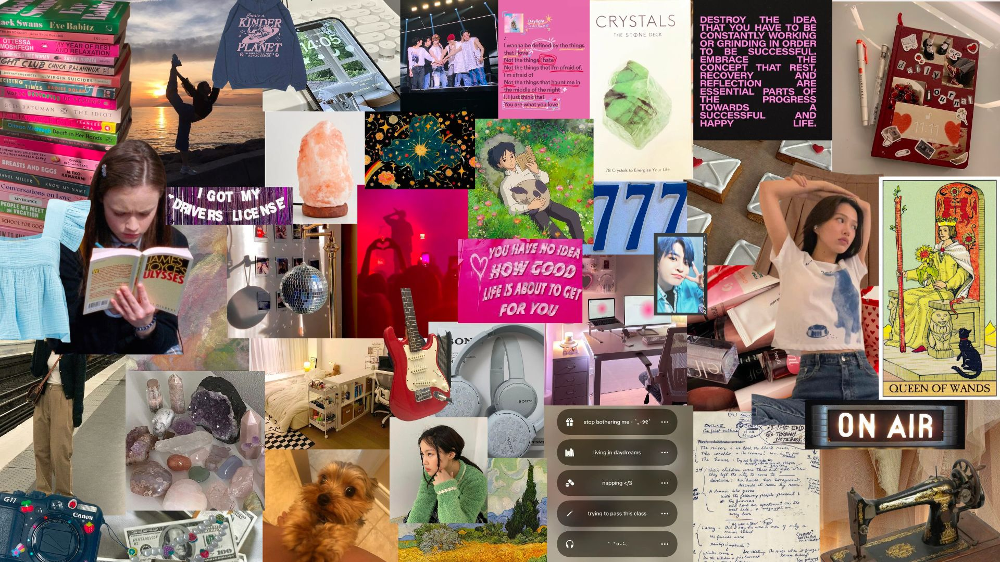

About Me

Aly is a second-year student taking up Bachelor of Arts in Multimedia Studies at the University of the Philippines - Open University. Having previously led her school's newsletter and a core member of a sociopolitical organization, Aly is drawn to work that involves storytelling and community engagement. Ever curious, Aly considers herself a lifelong learner who loves exploring everything life has to offer.
Things I Love
- Interests: Project Planning, Community Engagement, Writing
- Hobbies: Journaling, Walking, Watching Movies and Series, Tarot
- LetterboxD Top 4: Little Women, 10 Things I Hate About You, Four Sisters and a Wedding, Notting Hill
Passion Projects
this is a compilation of various artworks through different mediums that I have done for fun ^.^
digital art


(1) The Snoop Who Can't Be Moved
August 2025
This digital art created through Procreate is a take on the social media trend based on the Script's Song "The Man Who Can't Be Moved"
(2) I Take A Bite
August 2025
This digital art created through Procreate depicts the quote "I take a bite out of everything I love" and a Korean ice cream brand that's shaped as a fish
my visionboards

(3) 2023 Visionboard
January 2025
This collage of photos created through Canva is a reflection of my hopes, dreams, and aspirations for the year 2023. I have used this as my wallpaper throughout that given year.